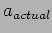
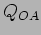
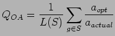

The optimum height is basically the highest elevation attained by the group during the feasible observation window - in a given window this may be at the end (rising target), start (setting target) or somewhere in the middle of the observing window (transiting target).
There is however a non-linear relationship between elevation and airmass such that for targets which do not rise particularly high the difference in image quality between worst and best case elevation may be high over a relatively small elevation difference whereas for high rising targets the difference in airmass and hence image quality between best and worst case elevations will be small for the same elevation difference .
Consequently it may be better to measure the ratio of execution-time airmass  to best achievable airmass as an Optimal Airmass metric .
Additionally, the benefit (image quality advantage) of one airmass over another may itself be non-linear and this is what we should really be measuring. measures the ratio of some decreasing benefit function of airmass at optimal airmass and actual execution-time airmass. A simple option for would be to use the known correction [] of image FWHM or seeing  for airmass relative to ideal seeing at elevation ,
for airmass relative to ideal seeing at elevation ,
 with indicating the image FWHM at and assuming image quality is judged purely (and linearly) on FWHM. It should be noted that this correction depends also on observation wavelength . Figure 5(a) shows 2 models for based on the standard FWHM correction.
with indicating the image FWHM at and assuming image quality is judged purely (and linearly) on FWHM. It should be noted that this correction depends also on observation wavelength . Figure 5(a) shows 2 models for based on the standard FWHM correction.
|  | (7) |
| (8) |
| (9) |
| (10) |
| (11) |
| (12) |
| [Comparison of models for determining airmass image quality advantage ()] |
These metrics require pre-calculation and storage prior to running the scheduler as we want to know the answer to: When is the best time to do this group on this execution for each exec of the group in the night
It had originally been intended to use these to minimise the sum of differences between the actual and optimal execution times - a good schedule then would be one in which the metric gave a low or best case zero result. A problem with this is that it is possible to achieve such a score by simply ommitting to perform observations - this is reminiscent of the train performance metrics used to measure the efficiency of privatized railway companies. If a train is running very late - simply cancelling the train removes it from the lateness statistics adding to the misery of the waiting passengers - its little comfort that the next train is on time if they have had to wait an hour for it !. Consequently these metrics must be scaled to give a high score when the measured variable is at maximum, lower measures when the time is poorly met and zero (or even negative) scores when the observation is not attempted. A schedule which simply avoids potential observations would then score badly.
Note: The best schedule for a given night is the one where every critical group is executed at its best time (ie when its overall utility is highest) and where the remaining groups (if any) are selected ``appropriately''. To determine what this actually is requires to test every feasible combination of critical group (and others) to see what could be achieved. This may then need to be done for different environmental assumptions for the night ahead. The remaining (non-critical) groups should probably be selected to miximize profit over a period (rather than for that specific night). All this makes no assumption about additional groups added via ODB mutation.
It will be useful to use ODB character metrics as an independant variable to compare E for various schedulers.
Almost any/Every metric used for this can be used as a selection heuristic - so...
Need to look at longer term aims (i.e. those that would be introduced by a tactical/strategic planner) - these include things like- fairness between users/TAGs, distribution of environmental conditions, darkness, regularity of data product etc. It may not be neccessary however to worry about these from the scheduler's pov as it is by neccessity working on a shorter timescale - these higher order entities can force appropriate changes in the scheduler's behaviour by altering the control parameters (and metrics) used by the scheduler to satisfy their longer term aims.
NOTE: